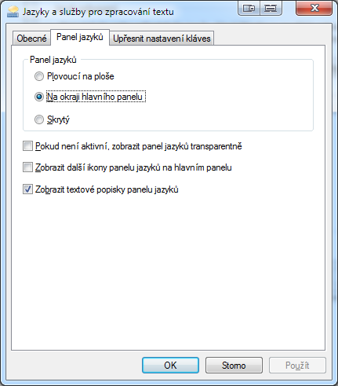
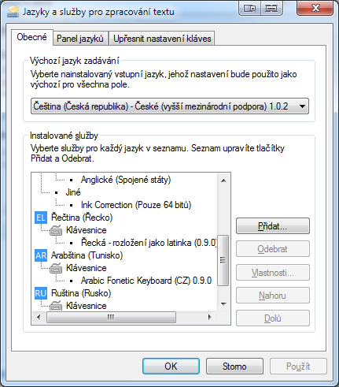
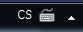
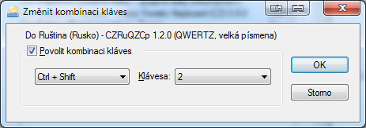

Ruská rozložení klávesnice pro Windows s rozložením kláves odpovídajícím českému (tzv. ruská fonetická klávesnice) ve verzi 2.0.0.
Tato verze zapracovává připomínky uživatelů, mění rozložení některých kláves a soustřeďuje se na jednoduché zadávání znaků používaných v ruštině.
Hlavní znaky
Zadávání ruských znaků v drtivé většině porgramů pro Windows.
Rozložení ruských znaků především podle jejich fonetické podobnosti s českými znaky.
Jednoduché a intuitivní zadávání všech znaků používaných v současné ruštině.
Poměrně jednoduché zadávání znaků používaných v některých dalších jazycích (běloruština, bulharština, makedonština, moldavština, srbština, ukrajinština).
Kompletní podporav pro všechny znaky z Unicode rozsahu Cyrilice 0400-04FF (jejich zadávání nemusí být ale vždy intuitivní, priorita byla kladena na ruštinu a evropské jazyky).
Rozložení se dodává ve čtyřech různých variantách. Všechny čtyři varianty je možno mít nainstalovány najednou.
Varianty se liší (stejně jako u čeké klávesnice) polohou písmen Z a Y (resp. З a Ы).
Dále pak tím, zda je při stisknutí Shift+klávesa pro klávesy v tzv. numerické řadě (na klávesnici nahoře nad "normálními písmeny") zadána číslice nebo velké písmeno.
Varianty rozložení klávesnice
Shift+klávesa
Poloha Z/Y
Zadává čísla (Nm)
Zadává velká písmena (Cp)
QWERTZ (QZ)
CzRuQZNm
CzRuQZCp
QWERTY (QY)
CzRuQYNm
CzRuQYCp
CzRuQZNm - QWERTZ, numerická řada
Rozložení QWERTZ (ЮЩЕРТЗ), klávesy v numerické řadě se shiftem zadávají čísla. Toto rozložení je vhodné především pro notebooky bez numerické klávesnice.
CzRuQZCp - QWERTZ, velká písmena místo čísel
Rozložení QWERTZ (ЮЩЕРТЗ), klávesy v numerické řadě se shiftem zadávají velká písmena.
CzRuQYNm - QWERTY, numerická řada
Rozložení QWERTZ (ЮЩЕРТЫ), klávesy v numerické řadě se shiftem zadávají čísla. Toto rozložení je vhodné především pro notobooky bez numerické klávesnice.
CzRuQYCp - QWERTY, velká písmena místo čísel
Rozložení QWERTY (ЮЩЕРТЫ), klávesy v numerické řadě se shiftem zadávají velká písmena.
Kombinační znaky
Některé znaky (předevčím varianty základních znaků s diakritikou) nemze zadat přímým vstupem z klávesnice.
Existuje však možnost zadat je jako kombinaci dvou znaků - kombinačního znaku (dead char) a jiného znaku.
Např. na české klávesnice je takto potřeba zadávat znaky ň, ó, ť, ä atd.
Na ruské fonetické klávesnici lze pomocí kombinačních znaků zadávat:
Kombinované znaky např. Ќ, Ѓ, Ӧ, Ӝ, Й
Znaky, které by se tímto způsoben zadaávali na české klávesnici (i když v cyrilici se jedná o samostatné znaky). Např. Ж, Ш, Ч, Љ. (Týká se jen kombinačního znaku háček (ˇ).)
Foneticky odvozené znaky. Jen několik znaků spadá do této kategorie: Я (ˇ, А), Ю (ˇ, У), Ь (ˇ, Ъ)
Pseudokombinované znaky. Znaky postavené na základních znacích cyrilice nějak modifikované, kdy modifikace více či méně vzdáleně graficky připomíná modifikaci základního znaku daným kombinačním znakem. Např. Ѩ (ˇ, Ѧ), Ѿ (¯, Ѡ), Ҹ (¸, Ч)
Kombinační znaky
Znak
Klávesnice
Z
Na
Z
Na
´
´; Ctrl+Alt+9 (Í)
Г
Ѓ
г
ѓ
К
Ќ
к
ќ
ˇ
Shift+´; Ctrl+Alt+2 (Ě)
Л
Љ
л
љ
Н
Њ
л
њ
З
Ж
з
ж
И
Й
и
й
Ц
Ч
ц
ч
С
Ш
с
ш
Ш
Щ
ш
щ
Ъ
Ь
ъ
ь
У
Ю
у
ю
А
Я
а
я
Ѧ
Ѩ
ѧ
ѩ
Ѫ
Ѭ
ѫ
ѭ
Є
Ѥ
є
ѥ
Ѡ
Ѻ
ѡ
ѻ
Ь
Ҍ
ь
ҍ
Щ
Һ
щ
һ
І
ӏ
і
Ӏ
˘
Ctrl+Alt+4 (Č)
У
Ў
у
ў
И
Й
и
й
Ж
Ӂ
ж
ӂ
А
Ӑ
а
ӑ
Е
Ӗ
е
ӗ
У
Ұ
у
ұ
ˇ
꙾
`
Ctrl+Alt+7 (Ý)
Е
Ѐ
е
ѐ
И
Ѝ
и
ѝ
К
Ҝ
к
ҝ
¨
¨; Ctrl+Alt+=
Е
Ё
е
ё
І
Ї
і
ї
А
Ӓ
а
ӓ
Ә
Ӛ
ә
ӛ
Ж
Ӝ
ж
ӝ
З
Ӟ
з
ӟ
И
Ӥ
и
ӥ
О
Ӧ
о
ӧ
Ѳ
Ӫ
ө
ӫ
Э
Ӭ
э
ӭ
У
Ӱ
у
ӱ
Ч
Ӵ
ч
ӵ
Ы
Ӹ
ы
ӹ
¯
Ctrl+Alt+;
Ь
Ѣ
ь
ѣ
Ѡ
Ѿ
ѡ
ѿ
Г
Ғ
г
ғ
К
Ҟ
к
ҟ
Н
Ҥ
н
ҥ
Х
Ӿ
х
ӿ
Ц
Ҵ
ц
ҵ
З
Ӡ
з
ӡ
И
Ӣ
и
ӣ
У
Ӯ
у
ӯ
˝
Ctrl+Alt+0 (É)
Ѵ
Ѷ
ѵ
ѷ
У
Ӳ
у
ӳ
~
Ctrl+Alt+1 (+)
Ѡ
Ѽ
ѡ
ѽ
К
Ҡ
к
ҡ
҃
˛
Ctrl+Alt+6 (Ž)
С
Ҁ
с
ҁ
Р
Ҏ
р
ҏ
Ж
Җ
ж
җ
К
Қ
к
қ
Н
Ң
н
ң
П
Ҧ
п
ҧ
О
Ҩ
о
ҩ
Т
Ҭ
т
ҭ
У
Ү
у
ү
Х
Ҳ
х
ҳ
Ч
Ҷ
ч
ҷ
Е
Ҿ
е
ҿ
Л
Ӆ
л
ӆ
Н
Ӊ
н
ӊ
М
Ӎ
м
ӎ
Г
Ӷ
г
ӷ
^
Ctrl+Alt+3 (Š)
҄
¸
Ctrl+Alt+´
Й
Ҋ
й
ҋ
Г
Ҕ
г
ҕ
З
Ҙ
з
ҙ
С
Ҫ
с
ҫ
Ч
Ҹ
ч
ҹ
Е
Ҽ
е
ҽ
К
Ӄ
к
ӄ
Н
Ӈ
Н
ӈ
Ч
Ӌ
ч
ӌ
Г
Ӻ
г
ӻ
Х
Ӽ
х
ӽ
Ctrl+Alt+Ú
б
ⷠ
ц
ⷰ
в
ⷡ
ч
ⷱ
г
ⷢ
ш
ⷲ
д
ⷣ
щ
ⷳ
ж
ⷤ
ө
ⷴ
з
ⷥ
к
ⷦ
а
ⷶ
л
ⷧ
е
ⷷ
м
ⷨ
н
ⷩ
о
ⷪ
п
ⷫ
ю
ⷻ
р
ⷬ
с
ⷭ
ѧ
ⷽ
т
ⷮ
ѫ
ⷾ
х
ⷯ
Instalace
Vyberte si rozložení klávesnice, které chcete nainstalovat.
Postupně je možno nainstallovat více různých rozložení.
Pokud máte nainstalováno stejné rozložení verze 1.2, je potřeba jej nejprve odinstalovat (z ovládacího panelu Přidat nebo odebrat programy).
Verze 1.1 a statší není nutné odinstalovávat, ale doporučuji to.
Spusťte soubor setup.exe s příslužné složky.
Vyčkejte na dokončení instalace.
Přepněte se do nově nainstalovaného rozložení pomocí panelu jazyků (nebo klávesové zkratky pro přepnutí klávesnice, máte-li ji nastavenu).
Poznámky
Pokud máte nastvenou klávesovou zkratku pro přepnutí do rozložení verze 1.2, odinstalujete jej a ihned nainstalujete stejné rozložení verze 2.0, klávesová zkratka zůstává v platnosti.
Je možno mít nainstalováno více rozložení pro jeden jazyk a přepínat mezi nimi.
Po nainstalování rozložení se toto automaticky přidá na panel jazyků (můžete jej odebrat - skrýt aniž by ste jej odinstalovávali). Ostatní uživatelé si jej musí manuálně přidat.
K instalaci (a odinstalaci) musíte mít na vašem počítači administrátorská oprávnění.
Odinstalace
Pokud již nechcete používat rozložení klávesnice a nechcete aby vás "otravovalo" na panelu jazyků, můžete jej přes vlastnosti panelu jazyků skrýt a nemusíte jej odinstalovávat.
Nastavení panelu jazyků je uloženo zvlášť pro každého uživatele počítače.
Pokud nastavení odinstalujete, nebude jej moci používat ani žádný jiný uživatel téhož počítače.
Jděte do ovládacího panelu Přidat nebo odebrat programy.
Vyhledejte příslušné rozložení klávesnice (všechny mají v názvu CzRu).
Odinstalujte jej.
Poznámka: Pokud je vaším úmyslem rozložení odinstalovat a již neinstalovat jeho novější verzi a máte pro odinstalovávané rozložení nastavenu klávesouvou zkratku,
doporučuji nejdříve klávesovou zkratku zrušit, jinak se může stát, že klávesovou zkratku nebudete moci později využít pro jiné rozložení.
Podporované operační systémy
Windows NT 4.0 (netestováno)
Windows 2000 (netestováno od verze 1.0.1)
Windows XP (netestováno od verze 1.1)
Windows 2003 (netestováno)
Windows Vista (netestováno s verzí 2)
Windows 2008 (netestováno)
Windows 7
Na podporovaných operačních systémech, jsou podporovány všechny architektury (pro které se příslušný operační systém dodává),
tj. x86 (32 bitová), x64 (64 bitová AMD 64), IA64 (64 bitová Intel Itanium), WoW64 (podpora 32 bitové aplikace běžící na 64 bitovém systému)
Návody
Zobrazení / skrytí panelu jazyků
Windows 7

Jděte do ovládacích panelů - Start | Ovládací panely
Zvolte Hodiny, jazyk a oblast
Zvolte Změnit klávesnice nebo jiné metody zadávání
Na kartě Klávesnice a jazyky zvolte Změnit klávesnice
Přejděte na kartu Panel jazyků
Zvolte požadovaná nastavení panelu jazyků, a potvrďte OK
Přidat / skrýt rozložení na panelu jazyků
Windows 7

Otevřte nastavení panelu jazyků
Pravým tlačítkem na Panelu jazyků | Nastavení.
Panel jazyků se obvykle nachází v pravém dolním rohu obrazovky, na taskbaru, vlevo vedle hodin.

Přes ovládací panely: Start | Ovládací panely | Hodiny, jazyk a oblast | Změnit klávesnice nebo jiné metody zadávání | (Klávesnice a jazyky) | Změnit klávesnice
Pro přidání rozložení klikněte na tlačítko Přidat a vyhledejte požadované rozložení.
Rozložení z tohoto balíku najdete pod Ruština (Rusko)\Klávesnice.
Pro odebrání rozložení jej vyberte v seznamu a klikněte na Odebrat.
Tímto pouze skryjete rozložení z panelu jazyků a můžete jej kdykoliv přidat zpět (tlačítkem Přidat).
Toto nastavení neovlivní ostatní uživatele počítače.
Soubory rozložení stále zůstavají ve vašem počítači.
Pro úplné odebrání rozložení jej musíte odinstalovat z ovládacího panelu Přidat nebo odebrat programy.
Nastavení klávesové zkratky pro rozložení
Windows 7

Otevřte nastavení panelu jazyků (viz předchozí návod)
Přejděte na kartu Upřesnit nastavení kláves
Vyberte rozložení, pro nějžch chcete klávesovou kombinaci změnit a klikněte na Změnit kombinaci kláves
Poznámka: Kvůli chybě v OS Windows 7 (testováno jen na 64b verzi) je nutno při každé změně klávesových zkratek pro klávesová rozložení vždy nastavit všechny klávesové zkratky znovu a najednou a pak už se do tohoto dialogu nevracet.